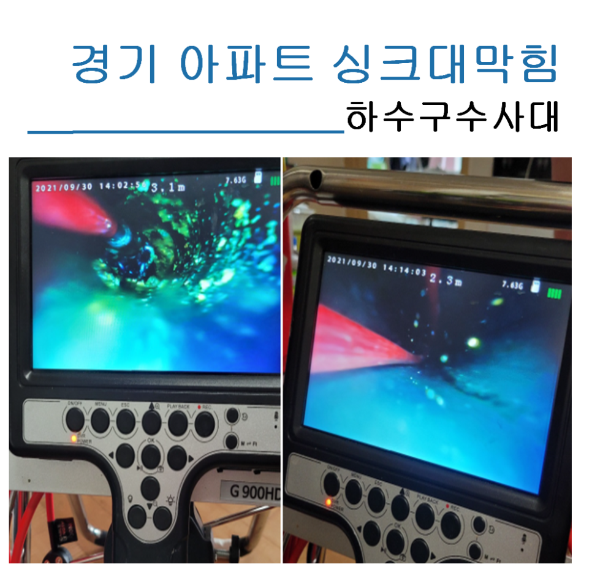
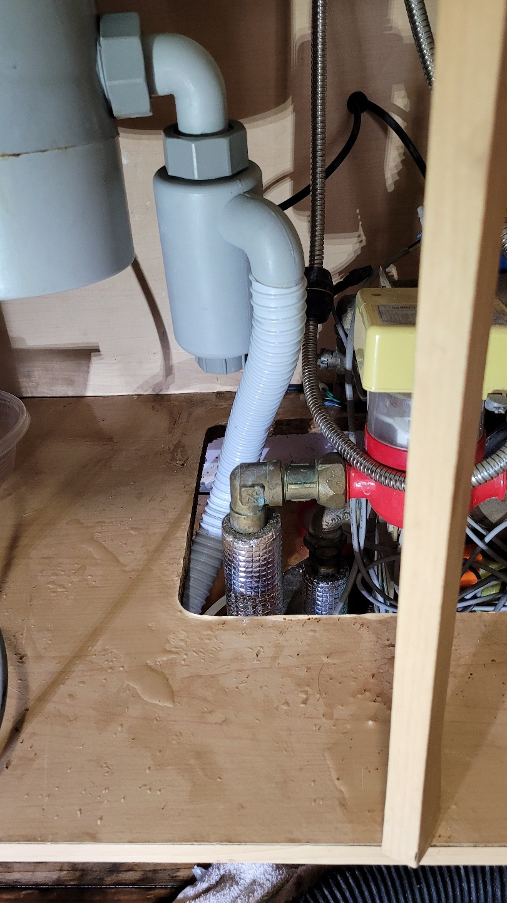
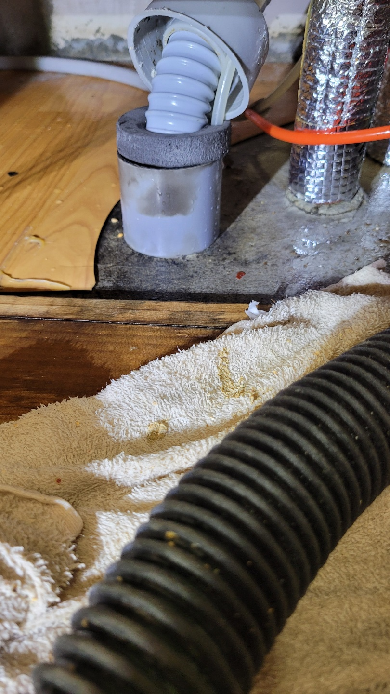
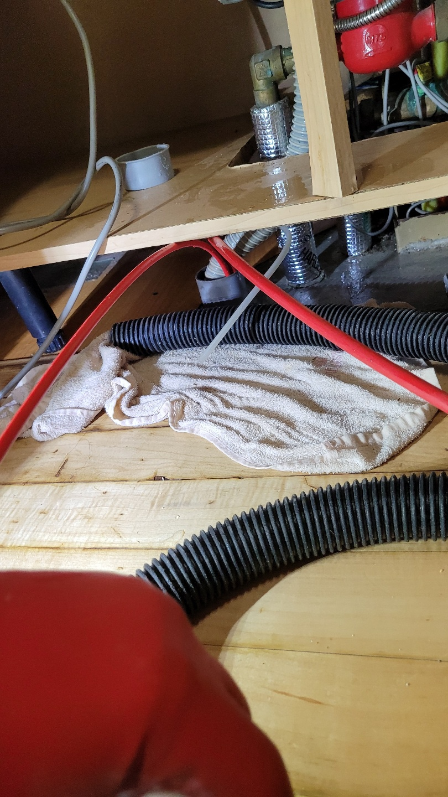
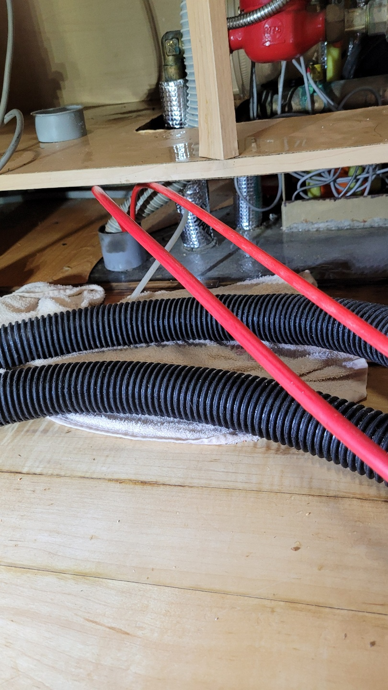
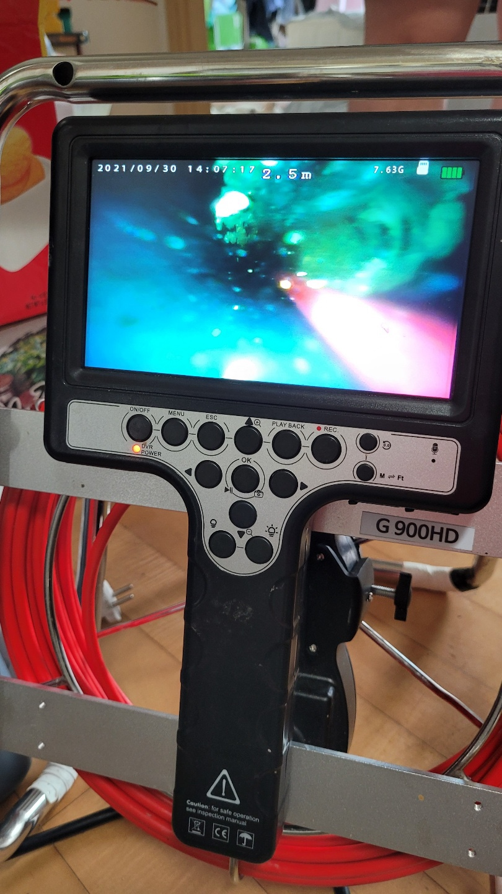
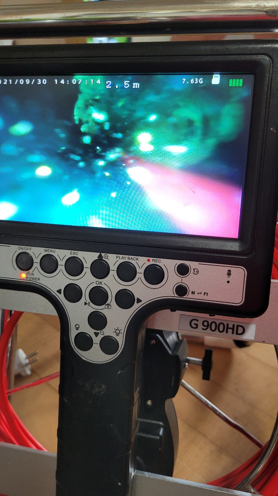
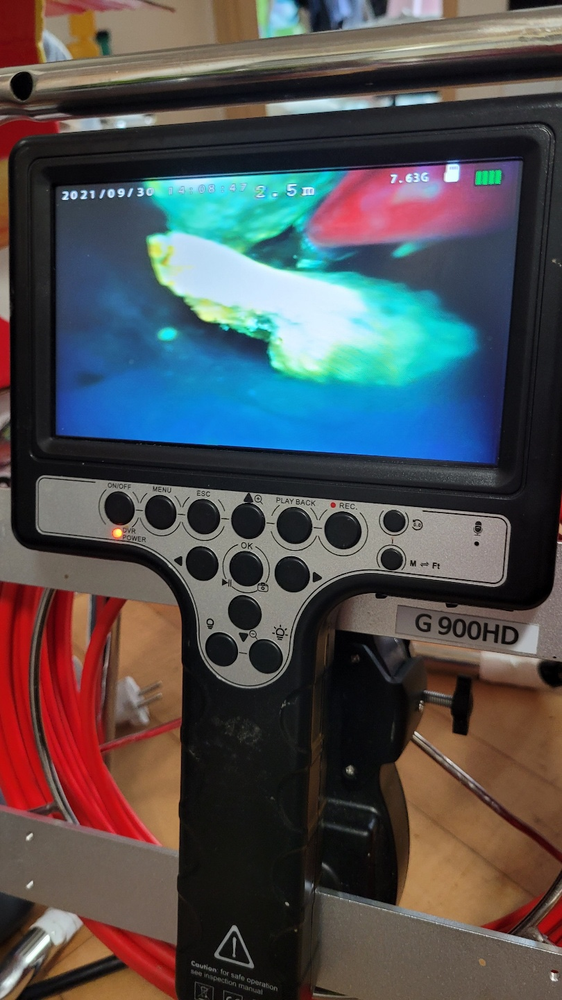

🏠 경기 아파트싱크대막힘 현장 말끔하게 해결했어요.
용인 싱크대막힘 전문 시공 후기

📋 작업 개요
- 위치: 용인
- 서비스 유형: 싱크대막힘, 하수구막힘, 배관막힘, 맨홀막힘, 역류해결, 뚫는업체, 배관청소
- 작업 일시: 2021. 10. 4. 21:14
- 업체명: 하수구수사대 (010-5615-2118)
🔍 문제 상황
안녕하세요. 오늘도
경기 아파트싱크대막힘 현장을 해결하러
출동한 하수구수사대 입니다.!!
이번 현장은 1년전에 뚫었는데
기름을 제대로 제거하지않아
역류되어 다시 막힌 현장을 재방문하였습니다.
이번 아파트싱크대막힘 현장도
완벽하게 제거된 모습과 함께
아례에서 살펴보실까요
배관아래쪽도 굉장히 지저분하더라고요.
그래서 그런지 악취도 많이났어요.
대부분 석션기는 기본적으로 쓰는 편입니다.
투모터 방식이거나 모터가 하나이거나
기본적으로 흡입하면서 제거되는 원리는
비슷하답니다.
단 장점으로는 간편하게 뚫을수 있지만
단점은 2~3미터 이내 구간만
뚫리는 단점이 있는데요

🔎 원인 분석
💡 전문가 진단: 비포에프터
아파트 배관길이는 평수마다, 아파트마다 다르기 때문에
짧은구간 내에서 집중적으로 막혔을때
이런 흡입작업이 효과적이랍니다.
저희 하수구수사대는 석션과 샤프트라고 하는
체인이 회전하면서 스켈링하는 체인헤드방식으로
번갈아 사용하며 가장 깔끔하게
제거되는 효과를 보실수 있어요.
너무길이가 길거나 주택인 경우에는 스프링을 써서
주방 배관부터 바깥쪽 맨홀까지 통과시켜주기도 하는데요.
항상 작업할때는 가구나 바닥을 손상시키지 않고
깔끔하게 시공하기 위해 노력한답니다.
오늘도 경기 아파트싱크대막힘 작업전 배수구 내부확인작업은
항상 필수로 하고 시작한답니다.
저희가 가지고 있는 냄새측정기를 사용하여
어떤상태인지 체크하고
작업에 재 측정해서 비교하여 고객님께
결과를 눈으로 확인시켜드립니다.
고객님께서도 직접 보시는게 가장 안전하고 믿을만하겠지요.

🔧 작업 과정
정말많은 기름때 보이시나요.
경기 아파트싱크대막힘 1년전 작업이후 방문하였지만 이렇게 많은
기름때가 있었다니 충격적인 결과입니다.
배관에 이물질이 남아있다면
배관에서 다시 역류를 하게 되는데
배관에서 나온 이물질들이에요.
요 노란 덩어리들은 다 기름덩어리에요.
이뿐만아니라 석션기 바닥에도 더 많은 이물질들이
검출되었습니다.
본격적인 작업을 위해 싱크대 아래 수납장을 열어
배수구와 연결된 주름호스가 꽃혀있는 아래 하수관을 분리한 후
주름호스와 하수관에 있는 이물질들을 흡입장비로 제거한답니다.
이번에도 경기 아파트싱크대막힘 작업도 하수구수사대의
흡입장비로 내부에 이물질들을 빨아들이는
작업을 진행했습니다.
우리가 흔히 알고있는 진공청소기보다 무려
힘이 5배이상 세기 때문에
어지간한 찌꺼기들은 다 빨아들일수 있답니다.
비포에프터
드디어 경기 아파트싱크대막힘 작업이 끝났습니다.
비포에프터를 보니
기름과 이물질이 말끔하게 제거되어
정말 깨끗해진걸 확인하였습니다.
아파트 싱크대막힘 원인은 정말 다양한데요.
저희 하수구수사대는 다른 업체에서 해결하지 못한
정말 많은 현장경험과 노하우로
신속하게 해결해 드리겠습니다.
음식물처리기로 인한 하수구막힘은


✅ 작업 완료
가라앉아있는 찌꺼기를 석션기로 전부 뽑아내야만
완벽하게 해결할수 있기 때문에
이러한 문제가 발생하셨다면 직접해결하기 보다는
꼭 전문가인 업체에 문의하여 해결하시는것을 추천드립니다.
오늘도 저희 하수구수사대를 믿고 맡겨주신 고객님께
정말 감사드립니다.
다음 현장으로 다시 돌아올게요.
오늘도 좋은하루 되세요^^




⚠️ 주방 싱크대 배관 막힘 예방 수칙
- ✅ 기름기가 묻은 식기나 프라이팬은 설거지 전 키친타올로 반드시 기름때를 닦아내세요.
- ✅ 주기적으로 싱크대 개수대에 뜨거운 물을 가득 받아 한 번에 내려 배관 내부 기름을 씻어내세요.
- ✅ 배수구 거름망을 미세한 필터로 사용하시고 음식물 찌꺼기가 틈으로 새어 들지 않게 관리하세요.
- ✅ 베이킹소다와 식초를 뜨거운 물과 함께 일주일에 한 번씩 부어주면 배관 살균과 막힘 예방에 좋습니다.
💡 핵심 정리
- 확실한 장비 작업(내시경 점검 및 샤프트 스케일링)으로 원인을 뿌리 뽑습니다.
- 작업 후 1년 이내에 동일한 부위 재발 시 100% 무상 A/S 서비스를 보장합니다.
- 서울 · 경기 · 인천 전 지역에 24시간 언제든 긴급 출동할 수 있도록 항시 대기 중입니다.
❓ 자주 묻는 질문 (FAQ)
🚨 용인 싱크대막힘 문제로 고민이신가요?
정확한 원인 진단과 확실한 시공으로 재발 없는 해결을 약속드립니다.
24시간 긴급 출동 | 서울 · 경기 · 인천 전지역 | 1년 내 재발 시 무상 A/S